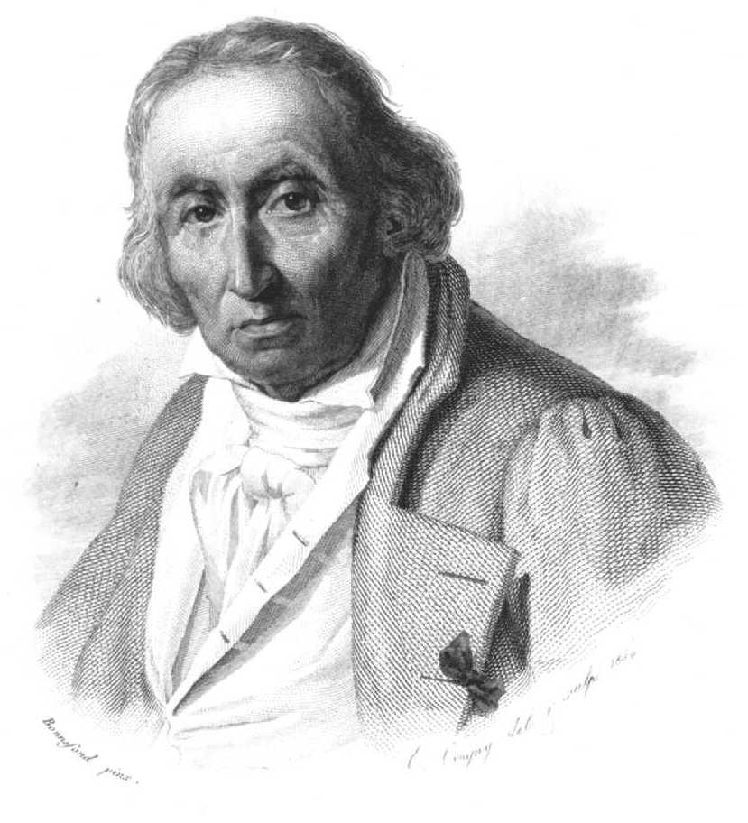

리옹의 직물공 자카르가 직조기에 구멍 뚫린 카드 묶음을 매답니다. 카드 한 장이 한 줄의 패턴을 결정합니다 — 구멍이 있으면 실이 올라가고, 없으면 내려갑니다.
숙련공이 한 달 걸리던 자수를, 카드를 갈아 끼우기만 하면 다른 무늬로 짤 수 있게 됐습니다. 기계가 카드를 ‘읽고’ 일하는 첫 사례였습니다.

Joseph-Marie Jacquard (1752—1834) · Wikimedia
직조공들은 분노했습니다. 리옹에서 폭동이 일었고, 자카르의 직조기는 광장에서 불태워졌습니다. 도구가 사람의 자리를 가져갔다는 가장 오래된 항의였습니다.